简介
原版模组一般是指在不修改Minecraft游戏本体的前提下，通过命令方块、ooc或数据包等方式对游戏的可玩性做出修改。
本次更新为元素更新，模组版本1.8，支持 Minecraft Java 1.13。本次更新为该模组最大的一次更新，引入了元素之力，增加了经验值在多方面的用途，包括方块处理、工具制作、效果释放、附魔书制作等，同时在原版的世界生成、交易、合成、烧炼、酿造各方面都添加了很多新的内容。
下载与安装
正式版目前尚未制作完成，点此可下载最新的预览版 v1.8-m03d30。下载后，将解压缩后的所有文件和文件夹(datapacks, data, resources.zip) 放入 .minecraft/saves/世界名称 文件夹，然后退出世界重进或按下F3+T即可。
背包合成
所有涉及模组特有物品的合成均采用背包合成，方式如下：将材料放入背包右上角对应的3×3的格子里即可自动得到产物，数量和位置须完全吻合。
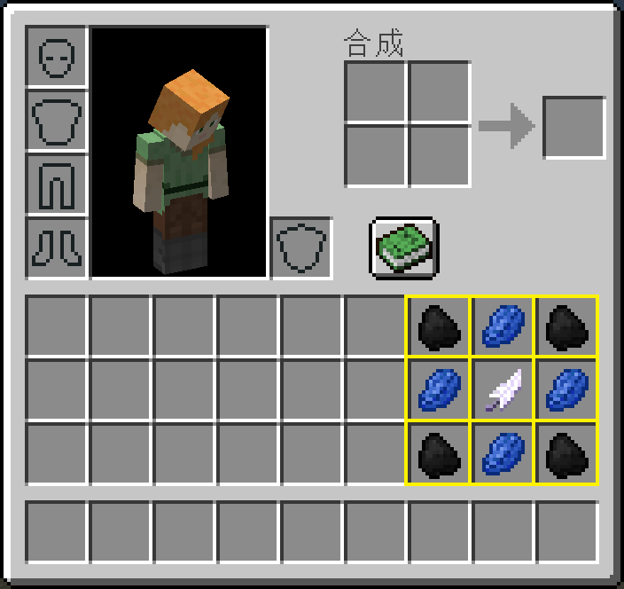
技术性提醒
技术上，该版本分为18个数据包模块，玩家如需要移除部分功能可将其对应的数据包删除即可。不过，模块之间有依赖关系，请根据内容保留必要的模块。
部分内容支持自定义参数，请打开datapacks/cpp_bag_craft/data/cpp/functions/bag_craft/config.mcfunction修改。
本模组命名空间为cpp，记分板、标签、组等均以cpp为前缀。为便于他人整合使用，烦请避开此前缀。
模组大部分文字支持英文，如需其它语言，可自行修改资源包中相应文件。如您乐意提供其它语言版本，修改resources.zip中的语言文件为相应版本，然后发送给我即可。如有任何意见建议，欢迎在论坛回复、发起issue或私信我。
声明
转载本文需遵守CC BY-NC-ND 2.5 CN 许可协议——列出作者(ruhuasiyu@mcbbs)、来源、原始下载链接以及相同的许可协议。
模组代码使用需遵守GNU GENERAL PUBLIC LICENSE v3.0协议。
不可转载至网盘或文件存储平台。公益服务器可直接使用；非公益服务器需联系我获得授权。通讯类工具可下载后分享。
致谢
感谢pinapple, the Eternal Celestial Star, 2b, pca, 玄素, chyx, zzzz_ustc, 乙烯_中国, switefaster, Santa西月, beback, 不伸手党, 怪蜀黍GSS, 浅荣时光, 小藩, shuaohao38等人和MCMOD-MC百科主群, CBL技术交流群, The Command's Power等群提供的意见和建议等, 感谢热力膨胀、 植物魔法、深渊国度、潘马斯农场、盐等模组提供的灵感。
进度
新增26项进度，完成进度会给予玩家经验、物品或状态效果。
| 图标 | 进度 | 游戏内描述 | 奖励 | 上游进度 | 内部ID |
|---|

|
开启模组！ | 感谢您的使用 | — | — | cpp:root |
|---|

|
元素之力 | 这是大自然的鬼斧神工 | — | 开启模组！ | cpp:element |
|---|

|
人生经验 | 不在书里，而在瓶子里 | — | 元素之力 | cpp:xp_bottle |
|---|

|
白雪纷纷何所似 | 撒盐空中差可拟 | — | 人生经验 | cpp:salt |
|---|

|
心急吃不了热饭菜 | 醒醒，这不是寿司 | — | 白雪纷纷何所似 | cpp:raw_meal |
|---|

|
叮当猫的口袋 | 再多石头也能装得下 | — | 心急吃不了热……饭菜 | cpp:doraemon |
|---|

|
提高姿势水平 | 还是得学习一个 | — | 叮当猫的口袋 | cpp:knowledge |
|---|

|
成为马猴烧酒 | 魔杖可是标配 | 100点经验 | 提高姿势水平 | cpp:mahoushoujo |
|---|

|
Release! | 星之魔杖 | 500点经验 | 成为马猴烧酒 | cpp:sakura |
|---|

|
当然是选择原谅她啦！ | 戴上你的原谅帽 | — | 开启模组！ | cpp:forgive |
|---|

|
小龙人 | 我头上有犄角 | — | 当然是选择原谅她啦！ | cpp:dragonboy |
|---|

|
艺术家 | My name is Van | — | 小龙人 | cpp:artist |
|---|

|
园林师 | 要想富，少生孩子多种树 | — | 艺术家 | cpp:gardener |
|---|

|
红色有角 | 跑的比谁都快 | 100点经验 | 园林师 | cpp:red_horn |
|---|

|
装完逼还想跑？ | 土著的愤怒 | 15秒的缓慢 | 开启模组！ | cpp:robber |
|---|

|
战斗民族 | 打死一头熊 | — | 装完逼还想跑？ | cpp:fighter |
|---|

|
海绵宝宝 | 我们去抓水母吧 | 章鱼哥 | 战斗民族 | cpp:sponge |
|---|

|
闪灵 | 杀死卫道士 | 100点经验 | 海绵宝宝 | cpp:shining |
|---|

|
不朽 | 肉山大魔王 | 100点经验 | 闪灵 | cpp:undead |
|---|

|
我是不是该减肥了？ | 体重翻倍了 | 500点经验 | 不朽 | cpp:fat |
|---|

|
已经没什么好害怕的了 | 学姐，你的头掉了 | 500点经验 | 我是不是该减肥了？ | cpp:all_head |
|---|

|
先有鸡还是先有蛋？ | 是先有蛋 | — | 开启模组！ | cpp:egg |
|---|

|
羊村村长 | 我一定会回来的 | — | 先有鸡还是先有蛋？ | cpp:sheep |
|---|

|
僵尸博士的复仇 | 没有豌豆了，用你的剑吧 | — | 羊村村长 | cpp:zombie |
|---|

|
铲屎官 | 喵喵喵 | — | 僵尸博士的复仇 | cpp:ocelot |
|---|

|
然而这并没有什么卵用 | 然而这却有蛋用 | 500点经验 | 铲屎官 | cpp:dragon_egg |
|---|

高压爬行者
高压爬行者可天然生成，几率约为10%。
村民
现在村民可被手持绿宝石块的玩家吸引。
稀有物无敌
下界之星、不死图腾、龙蛋的掉落物形式将不会被火焰或仙人掌破坏。
掉落物和宝箱
下表中蓝字为稀有掉落物或受幸运加成，红字受幸运减成；同时生物死亡时若着火会掉落对应熟肉，且不掉落羽毛和飞翔之翼；北极熊不再掉落鱼。
表格中左上角*表示易和原版混淆的物品。
| 掉落物 | 来源 |
|---|
| * |
飞翔之翼 |
鸡/鹦鹉/蝙蝠/恼鬼/幻影鳐 |
|---|
|
生物之肢 |
兔子/蝙蝠/蜘蛛/洞穴蜘蛛/蠹虫/末影螨/潜影贝
要塞祭坛/要塞储藏室/废弃矿井 |
|---|
| * |
海洋之心 |
鱿鱼/守卫者/远古守卫者/海龟/海豚 |
|---|
| * |
亡灵之魂 |
僵尸/僵尸村民/骷髅/尸壳/流髑/凋灵骷髅/骷髅马/僵尸猪人/幻影鳐/水鬼
沙漠神殿/地牢/丛林神庙 |
|---|
| * |
居民之证 |
僵尸村民/村民/卫道士/唤魔者
村庄/林地府邸/雪屋 |
|---|
| * |
硝火之烬 |
爬行者/烈焰人/恶魂/岩浆怪
下界要塞 |
|---|
| * |
末影之灵 |
末影人/末影螨/潜影贝 |
|---|
|
生物头颅 |
牛/猪/羊/哞菇/兔子/鱿鱼/马/驴/骡/羊驼/北极熊/豹猫/狼
僵尸/僵尸村民/骷髅/爬行者/女巫/蜘蛛/洞穴蜘蛛/史莱姆
尸壳/流髑/骷髅马/守卫者/远古守卫者/村民/卫道士/恼鬼
铁傀儡/雪傀儡/僵尸猪人/烈焰人/恶魂/岩浆怪/末影人/末影螨/末影龙 |
|---|
|
红色蘑菇 |
哞菇掉落0~2 |
|---|
| * |
肉 |
鹦鹉/马/驴/骡/羊驼掉落0~3，北极熊掉落1~4，僵尸猪人掉落0~1生猪排 |
|---|
|
绿宝石 |
村民掉落0~4 |
|---|
|
经验值 |
村民掉落3 |
|---|
|
钓鱼 |
湿海绵/鱼头/鲑鱼头/小丑鱼头/河豚头 |
|---|
| 火药/海晶碎片 |
元素之力
通过搭配不同的染料、矿物和生物的稀有掉落物，我们可以合成不同的元素之力。元素之力可通过消耗经验发挥不同的效果，也是参与自动化处理的必需品，同时还可用于合成各种材料和工具。元素之力参与合成时自身不会被消耗。
| 产物 | 材料 | 合成配方 | 说明 |
|---|
| 蓝色天之力 (Blue Force of Sky) | 青金石+煤炭+飞翔之翼 |
*
| 右键消耗玩家20点经验切换为晴天。 |
|---|
| 绿色水之力 (Green Force of Water) | 仙人掌绿+红石+海洋之心 |
*
| 右键消耗玩家1点经验并放置一格水。 |
|---|
| 青色山之力 (Cyan Force of Mountain) | 青色染料+铁锭+生物之肢 |
| 当玩家高度大于62时，右键消耗玩家40点经验并整地5×5区域至海平面高度。 |
|---|
| 橙色土之力 (Orange Force of Dirt) | 橙色染料+青金石+亡灵之魂 |
*
| 右键消耗玩家1点经验并破坏前方土质方块。 |
|---|
| 黄色地之力 (Yellow Force of Earth) | 蒲公英黄+金锭+居民之证 |
*
| 右键消耗玩家80点经验并清除附近15×3×15区域中的水和岩浆。 |
|---|
| 红色火之力 (Red Force of Fire) | 玫瑰红+石英+硝火之烬 |
*
| 右键消耗玩家1点经验并烧炼前方方块成物品。 |
|---|
| 紫色木之力 (Purple Force of Wood) | 紫色染料+钻石+末影之灵 |
*
| 右键转换地面的物品：树苗、种子/甘蔗/仙人掌/可可豆和花，转化比率为2:1。 |
|---|
| 白色电之力 (White Force of Lightning) | 骨粉+绿宝石+下界之星 |
| 右键去除地面的物品附魔。 |
|---|
| 黑色月之力 (Black Force of Moon) | 墨囊+荧石粉+龙蛋 |
| 右键消耗玩家80点经验并在前方铺设3米宽的泥土道路。
Moon power, make up! |
|---|
机械
沿竖直方向从下往上依次摆放漏斗、相应玻璃、机器核心即可。然后将材料按特定形状放入即可，一般正上槽为机械核心部件，正下槽为附魔之瓶，其余为材料或玻璃板。
压缩机
机械核心部件为压缩器，正中槽放入待压缩的物品即可。
| 正中槽 | 产物 |
|---|
| 4 荧石粉 | 荧石块 |
| 4 雪球 | 雪块 |
| 4 粘土球 | 粘土块 |
| 4 月之碎片 | 日之碎片 (Sun Shard) |
| 9 日之碎片 | 下界之星 |
| 9 铁粒 | 铁锭 |
| 9 金粒 | 金锭 |
| 9 矿物 | 矿物块 |
| 9 小块皮革 | 皮革 |
| 9 西瓜片 | 西瓜 |
| 9 地狱疣 | 地狱疣块 |
| 9 线 | 蜘蛛网 |
| 9 小麦 | 干草块 |
| 9 干海带 | 干海带块 |
| 9 粘液球 | 粘液块 |
反应釜
机械核心部件为黄色地之力。
| 左中槽 | 右中槽 | 正中槽 | 左下槽 | 右下槽 | 经验槽 | 产物 |
|---|
| 糖 | 闪烁的西瓜 | 地狱疣 | 腐肉 | 火药 | 附魔之瓶 | 生物酸 (Bionic Acid) |
| 可可豆 | 南瓜 | 骨粉 | 发酵蛛眼 | 生物碱 (Alkaloid) |
| 石英粉 | 燧石 | 粗硅 (Course Silicon) |
| 玻璃瓶 | 活塞 | 空气瓶 (Bottle of Air) |
| 粗硅 | 空气瓶 | 硅粉 (Silicon Dust) |
| 硅粉 | 活塞 | 硅板 (Silicon Plate) |
| 粘土 | 盐瓶 | 稀土盐 (Rare Earth Salt) |
| 稀土盐 | 生物碱 | 碱性稀土 (Alkaline Rare Earth) |
| 碱性稀土 | 生物酸 | 稀土粉 (Rare Earth Dust) |
造石机
*
机械核心部件为青色山之力。
| 左中槽 | 正中槽 | 插件槽 | 经验槽 | 产物 | 备注 |
|---|
| 水桶 | 岩浆桶 | 附魔铁锭 | 迷你附魔瓶 | 圆石 | 岩浆桶不会被消耗，水桶会返还桶，耗时1秒 |
| 水桶 | 岩浆桶 | 附魔金锭 | 迷你附魔瓶 | 石头 | 岩浆桶不会被消耗，水桶会返还桶，耗时1秒 |
| 水桶 | 岩浆桶 | 附魔钻石 | 附魔之瓶 | 黑曜石 | 水桶不会被消耗，岩浆桶会返还桶，耗时10秒 |
冷冻机
*
*
机械核心部件为绿色水之力。
熔炼机
*
机械核心部件为红色火之力。
| 左中槽 | 正中槽 | 经验槽 | 产物 | 备注 |
|---|
| 沙子/红沙 | 铁矿石 | 附魔小瓶 | 1~2铁锭、1~2金粒、10%附魔铁锭 | 耗时10秒 |
| 金矿石 | 1~2金锭、1~2铁粒、10%附魔金锭 |
| 煤矿石 | 2~3煤炭,1%钻石 |
| 石英矿石 | 2~3石英,1‰下界之星 |
| 钻石矿石 | 2~3钻石,10%绿宝石 |
| 绿宝石矿石 | 2~3绿宝石,10%钻石 |
| 红石矿石 | 4~6红石,0~2青金石 |
| 青金石矿石 | 1~2青金石块,0~2红石 |
| 钢粉 | 钢化玻璃 (Reinforced Glass) |
| 稀土粉 | 稀土玻璃 (Rare Earth Glass) |
| 向日葵 | 水桶 | 盐瓶 (Bottle of salt) |
粉碎机
机械核心部件为橙色土之力。
| 正中槽 | 经验槽 | 产物 | 备注 |
|---|
| 铁矿石 | 附魔小瓶 | 铁粉 (Iron Dust) | 耗时10秒 |
| 金矿石 | 金粉 (Gold Dust) |
| 煤矿石 | 碳粉 (Carbon Dust) |
| 钻石矿石 | 钻石粉 (Diamond Dust) |
| 绿宝石矿石 | 绿宝石粉 (Emerald Dust) |
| 红石矿石 | 6红石、1红石块 |
| 青金石矿石 | 5青金石粉 (Lapis Dust) |
| 石英矿石 | 石英粉 (Quartz Dust) |
| 铁块 | 附魔之瓶 | 3铁粉 | 耗时10秒 |
| 金块 | 3金粉 |
| 煤炭块 | 3碳粉 |
| 钻石块 | 3钻石粉 |
| 绿宝石块 | 3绿宝石粉 |
| 青金石块 | 3青金石粉 |
| 石英块 | 3石英粉 |
| 圆石 | 迷你附魔瓶 | 沙子、0~1砂砾 | 耗时3秒 |
| 石头 | 砂砾、0~1沙子 |
| 砂砾 | 燧石、0~1沙子 |
| 海晶石/海晶石砖/暗海晶石 | 3海晶碎片、海晶砂粒 |
| 羊毛 | 4线、5%染料 |
| 粘土 | 粘液球 |
| 木炭 | 33% 碳粉 |
| 花岗岩/安山岩/闪长岩 | 33% 石英粉 |
孵化器
*
*
机械核心部件为紫色木之力。底部漏斗下方需再放置一个漏斗，否则会堵塞机器。
造物机
机械核心部件为黑色月之力。
附魔瓶
玩家在背包合成区域中间放置一个/两个/四个漏斗而其余8格为空时，会自动将相应的经验值转化为迷你附魔瓶 (Mini Experience Bottle)/附魔小瓶 (Small Experience Bottle)/附魔之瓶。
工具
工具在物品展示框、玩家手中、玩家背包或玩家右键时会发挥相应的效果。
| 产物 | 材料 | 合成配方 | 说明 |
|---|
| 机械核心 (Machine Core) | 附魔铁锭+红石 |
*
*
*
*
*
*
*
*
*
| |
|---|
| 钢粉 (Steel Dust) | 碳粉+铁粉 |
| |
|---|
| 附魔铁锭 (Enchanted Iron) | 附魔之瓶+蓝色天之力+铁锭 |
*
| |
|---|
| 附魔金锭 (Enchanted Iron) | 附魔之瓶+蓝色天之力+金锭 |
*
| |
|---|
| 附魔钻石 (Enchanted Diamond) | 附魔之瓶+蓝色天之力+钻石 |
*
| |
|---|
| 磁铁 (Magnet) | 附魔铁锭+红石 |
*
*
*
*
| 自动将附近物品吸引过来。右键依次切换范围为0/8/16米。 |
|---|
| 时间调节器 (Time Conditioner) | 附魔金锭+红石 |
*
*
*
*
| 右键依次切换模式为作物生长速度加倍/作物生长速度恢复/停止日夜循环/开启日夜循环。 |
|---|
| 报时器 (Time Checker) | 附魔钻石+红石 |
*
*
*
*
| 放置于物品展示框后可报时。右键可随心所欲控制时间。 |
|---|
| 世界之源 (Origin of the World) | 飞翔之翼+生物之肢+红石 |
*
*
| 右键消耗20点经验返回世界原点。 |
|---|
| 压缩器 (Compressor) | 附魔之瓶+蓝色天之力+附魔金锭+石制按钮+附魔铁锭+附魔钻石 |
*
*
*
*
*
| 右键将玩家背包中整组的方块压缩为1个方块堆。支持泥土、沙子、红沙、砂砾、圆石、石头、粘土块、陶瓦。按Q复原压缩物品。 |
|---|
| 方块转化器 (Block Converter) |
烈焰粉+红色火之力+附魔之瓶+岩浆块+附魔钻石 |
*
*
*
*
*
*
| 顶部放置待转换的方块，水平方向放置转换后的方块即可，水平方向越多速度越快（最多4个）。所需时间最快为2分钟×次数。可转换的方块为石头→煤矿石→铁矿石→金矿石→钻石矿石，粘土→青金石矿石→红石矿石→绿宝石矿石，地狱岩→石英矿石，红石块→荧石块。破坏后无掉落。可在配置文件中修改冷却时间。 |
|---|
| 年长者之教诲 (Elder's Words) | 附魔之瓶+青色山之力+附魔金锭+书+附魔铁锭+附魔钻石 |
*
*
*
*
*
| 每6秒给予拥有者1点经验。可在配置文件中修改冷却时间。 |
|---|
| 传送球 (Transport Ball) | 末影珍珠+黄色地之力+附魔金锭+经验释放器+附魔铁锭+附魔钻石 |
*
*
*
*
*
*
| 右键将玩家传送至前方指针处，不超过100米。 |
|---|
| 破坏之手 (Break Hand) | 稀土玻璃+白色电之力+附魔金锭+钻石镐+末影人的头 |
*
*
*
*
*
*
| 放置在物品展示框时，会破坏正上方的方块。 |
|---|
| 农场核心 (Farm Core) | 稀土玻璃+白色电之力+附魔金锭+钻石锄+末影人的头 |
*
*
*
*
*
*
| |
|---|
| 疣场核心 (Wart Core) | 稀土玻璃+白色电之力+附魔金锭+钻石锹+末影人的头 |
*
*
*
*
*
*
| |
|---|
| 林场核心 (Forestry Core) | 稀土玻璃+白色电之力+附魔金锭+钻石斧+末影人的头 |
*
*
*
*
*
*
| |
|---|
| 牧场核心 (Ranch Core) | 钢化玻璃+白色电之力+附魔金锭+钻石剑+末影人的头 |
*
*
*
*
*
*
| |
|---|
| 渔场核心 (Fishery Core) | 钢化玻璃+白色电之力+附魔金锭+钓鱼竿+末影人的头 |
*
*
*
*
*
*
| |
|---|
| 猎场核心 (Hunting Core) | 钢化玻璃+白色电之力+附魔金锭+弓+末影人的头 |
*
*
*
*
*
*
| |
|---|
营养均衡
玩家需要保持适当的体重以避免过于肥胖或过于瘦弱，这可以通过荤素搭配来实现。如果玩家身体超重(Fat>100)会行走缓慢，而体重过轻(Fat<-100)则会变得虚弱。使用测重压力板可以测量出你的体重指数。
食物和药水
移除了原有的兔肉煲配方。现在需先制作生的食物，然后再使用熔炉烹饪方可。同时，鸡蛋和胡萝卜也可以再熔炉加热了。同时还添加了两种药水的酿造。
| 产物 | 材料 | 合成配方 |
|---|
生缤纷菜蔬 (Raw Colorful Vegetable)
 | 盐瓶+胡萝卜+南瓜+马铃薯+碗 |
* |
|---|
生土豆排骨 (Raw Braised Pork with Potato)
| 盐瓶+生猪排+南瓜+马铃薯+碗 |
* |
|---|
生土豆牛肉 (Raw Braised Beef with Potato)
| 盐瓶+胡萝卜+生牛肉+马铃薯+碗 |
* |
|---|
生兔肉煲 (Raw Rabbit Stew)
| 盐瓶+胡萝卜+生兔肉+马铃薯+碗 |
* |
|---|
炸鱼薯条 (Fish and Chips)
速度 00:30 | 盐瓶+烤马铃薯+熟鳕鱼+烤马铃薯+碗 |
* |
|---|
肉松面包 (Meat Floss Bread)
速度 00:30 | 盐瓶+小麦+熟鸡肉 |
* |
|---|
| 名称 | 材料 | 烧炼/酿造配方 | 时长 |
|---|
鸡蛋羹 (Egg Stew)
| 鸡蛋 |
*
| 10秒 |
|---|
烤胡萝卜 (Egg Stew)
 | 胡萝卜 |
*
| 10秒 |
|---|
缤纷菜蔬 (Colorful Vegetable)
跳跃提升 00:30 | 生缤纷菜蔬 |
*
*
| 10秒 |
|---|
土豆排骨 (Braised Pork with Potato)
力量II 00:30 | 生土豆排骨 |
*
*
| 10秒 |
|---|
土豆牛肉 (Braised Beef with Potato)
力量II 00:30 | 生土豆牛肉 |
*
*
| 10秒 |
|---|
兔肉煲 (Rabbit Stew)
力量II 00:30 | 兔肉煲 |
*
*
| 10秒 |
|---|
| 小块皮革 | 腐肉
皮革盔甲
鞍 |
| 10秒 |
|---|
| 钻石 (1/9的几率) | 钻石剑
任何钻石工具
任何钻石盔甲
钻石马铠 |
0.11
| 10秒 |
|---|
鲁莽药水 (Potion of Reckless)
速度 2:00
抗性 2:00
防火 2:00
夜视 2:00 | 硝火之烬+粗制的药水 |
*
| 15秒 |
|---|
忍者药水 (Potion of Ninja)
跳跃提升 2:00
生命恢复 2:00
水下呼吸 2:00
隐身 2:00 | 生物之肢+粗制的药水 |
| 15秒 |
|---|
熬制
将物品扔进炼药锅内，放入适量的水，并在控制好下方的火候，可以熬制特别的食物。
| 材料 | 火候 | 水量 | 时长 | 产物/特效 |
|---|
|
*
*
*
|
|
|
| *
| 附魔金苹果 |
|
|
|
|
| *
| 拔丝苹果 (Toffee Apple)
迅捷 30秒 |
仪式
玩家完成进度“附魔师”后，可以合成出魔杖/星之魔杖。
| 产物 | 材料 | 合成配方 |
|---|
| 魔杖 (Magicka Wand) | 附魔铁锭+附魔金锭+木棍 |
*
*
*
*
*
*
*
*
|
|---|
| 星之魔杖 (Sakura Wand) | 月之碎片+日之碎片+魔杖 |
*
*
*
*
*
*
*
*
*
|
|---|
将方块摆放成下述形状，中间的发射器方向朝上：
在发射器中放入特定物品，然后扔上一个待添加效果的物品，手持魔杖右击发射器，然后等待发射器上符文粒子消失即可。仪式有多种用途：
- 为盔甲或工具附加特殊效果。每种物品只能附加一种效果，后附加的会直接覆盖先附加的，但挼心除外。某些效果在相应槽位即可自动生效，某些则需要玩家满足相应条件才会生效，同时消耗玩家经验值。
- 制作满级附魔书。不同的物品对应不同的附魔书，这种对应关系在世界生成时才被确定下来。如果使用的是星之魔杖，则附魔书等级还会额外+1。
- 改变热带鱼的颜色。放入小丑鱼桶和染料即可，这种操作不会改变小丑鱼的花纹类别和大小。
| 材料 | 时长 | 效果 |
|---|
|
| 青金石+忍者药水 | 60秒 | 钻石头盔——水肺(仅在水中生效)
钻石胸甲——隐身
钻石护腿——再生(仅在受伤时生效，每秒消耗20xp)
钻石靴子——跳跃
|
|
| 青金石+鲁莽药水 | 60秒 | 钻石头盔——夜视
钻石胸甲——抗性
钻石护腿——抗火
钻石靴子——速度
|
|
*
*
*
*
| 青金石+附魔钻石 | 60秒 | 钻石剑——力量
钻石斧/锹/镐——急迫
钓鱼竿——幸运 |
|
*
*
*
*
| 青金石+附魔金苹果 | 60秒 | 钻石头盔——反刍(仅在饥饿时生效，每点饥饿值消耗20xp)
钻石斧/锹/镐——连锁(砍树/瓜、挖矿、挖沙砾/粘土/沙子)
书——漂浮(副手持有时生效) |
|
*
*
*
*
| 不死图腾+附魔钻石 | 60秒 | 钻石胸甲——挼心(最大生命值+10) |
|
| 下界之星+龙蛋 | 60秒 | 钻石胸甲(挼心)——大挼心(最大生命值+20) |
|
64
64
*
64
64
| 青金石+附魔之瓶 | 10秒 | 飞翔之翼/海洋之心/生物之肢/亡灵之魂/居民之证/硝火之烬/
末影之灵/下界之星各对应4种特定的顶级附魔书。 |
|
| 染料+染料+热带鱼桶 | - | 对应颜色的热带鱼桶。 |
服饰
新增若干服饰，其中荧光帽可使玩家发光，但是并不提供照明；非酋帽自带霉运效果；雪地靴会使玩家在雪上会跑得更快。
| 名称 | 材料 | 合成配方 | 描述 |
|---|
荧光帽 (Glow Hat)
原谅帽 (Green Hat)
非酋帽 (Black Hat)
护士帽 (Nurse Hat)
小红帽 (Red Hat) |
荧石粉+皮革
绿宝石+皮革
煤炭+皮革
石英+皮革
玫瑰红+皮革 |
| 提供1点盔甲 |
|---|
皮夹克 (Jacket)
红色外套 (Red Coat) |
可可豆+皮革
玫瑰红+皮革 |
| 提供2点盔甲 |
|---|
紧身皮裤 (Tight Leather Leggings)
牛仔裤 (Blue Jeans) |
煤炭+皮革
青金石+皮革 |
| 提供2点盔甲 |
|---|
| 雪地靴 (Snow Boots) |
皮革 |
| 提供1点盔甲 |
|---|
头饰
玩家未佩戴头盔或帽子，且副手持有指定的1个物品时，会自动佩戴该物品。共57款样式。
| 帽子 | 围脖 | 花饰 | 其它装饰 |
|---|
| 玻璃 | 铁砧 | 石台阶 | 龙蛋 | 白色床 | 各色地毯 | 雪 | 铁活板门 | 各种花 | 草、厥 | 栅栏门 | 阳光传感器 | 末地烛 | 栅栏 |
|
|
|
|
|
|
|
|
|
|
|
|
|
|
| 空气头盔 | 矿工帽 | 绷带 | 绅士帽 | 长冠 | 围脖 | 厚围脖 | 超厚围脖 | 花 | 头上长草 | 眼镜 | 口罩 | 犄角 | 奥特曼 |
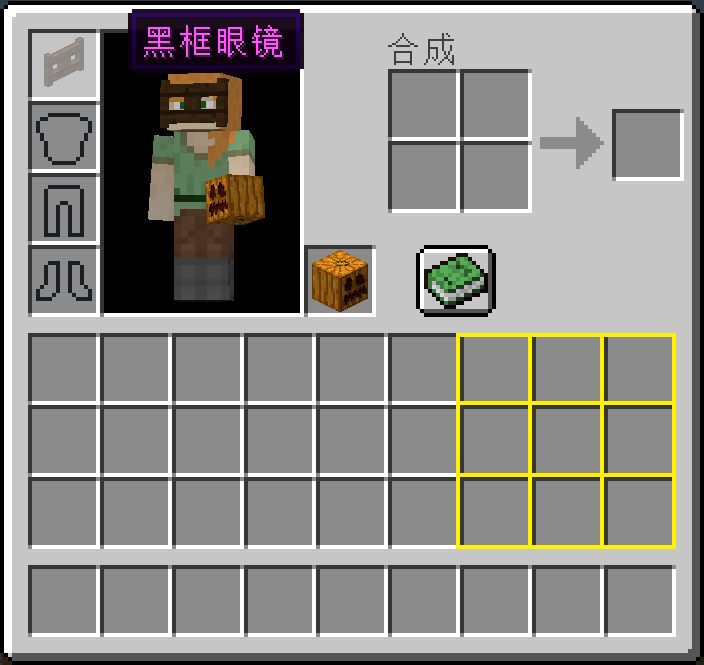
画作
新增了16种画的合成。根据画的尺寸，将画放置在物品展示框上以拼成完整的画。
| 名称 | 材料 | 合成配方 |
|---|
呐喊 (Skrik)
4×3 | 画+红色羊毛+黄色羊毛+蓝色羊毛 |
12 |
|---|
蒙娜丽莎 (Mona Lisa)
3×2 | 画+黄色羊毛+棕色羊毛+黑色羊毛 |
6 |
|---|
最后的晚餐 (The Last Supper)
1×2 | 画+黑色羊毛+白色羊毛+红色羊毛+淡蓝色羊毛 |
2 |
|---|
落霞孤鹜图 (Luoxia Guwu)
2×1 | 画+黄色羊毛+黑色羊毛+白色羊毛 |
2 |
|---|
竹石图 (Bamboo and Stone)
2×1 | 画+白色羊毛+黑色羊毛 |
2 |
|---|
向日葵 (Sunflower)
4×3 | 画+淡蓝色羊毛+黄色羊毛+橙色羊毛 |
12 |
|---|
印象·日出 (Impression, soleil levant)
3×4 | 画+红色羊毛+棕色羊毛 |
12 |
|---|
莫奈花园 (Monet in Garden)
3×4 | 画+红色羊毛+白色羊毛+黄绿色羊毛+淡灰色羊毛+青色羊毛+黄色羊毛 |
12 |
|---|
岩间圣母 (Virgin of the Rocks)
3×2 | 画+白色羊毛+黑色羊毛+棕色羊毛+红色羊毛 |
6 |
|---|
创造亚当 (The Creation of Adam)
1×2 | 画+白色羊毛+棕色羊毛+黄色羊毛 |
2 |
|---|
伏尔加河上的纤夫 (Barge Haulers on the Volga)
1×2 | 画+淡蓝色羊毛+白色羊毛+黄色羊毛+黑色羊毛 |
2 |
|---|
开国大典 (The Founding Ceremony of the Nation)
1×2 | 画+红色羊毛+白色羊毛+蓝色羊毛+棕色羊毛+黄色羊毛 |
2 |
|---|
无名女郎 (The Unknown Girl)
3×4 | 画+黄绿色羊毛+黑色羊毛+青色羊毛+黄色羊毛 |
12 |
|---|
星夜 (The Starry Night)
3×4 | 画+蓝色羊毛+黄绿色羊毛+黑色羊毛 |
12 |
|---|
自由引导人民 (Liberty Leading the People)
2×3 | 画+淡灰色羊毛+红色羊毛+黑色羊毛+橙色羊毛 |
6 |
|---|
拾穗者 (The Gleaners)
2×3 | 画+白色羊毛+黄色羊毛+橙色羊毛 |
6 |
|---|

自动种植
当发射器发射的物品可以种植在前方位置时，会自动种植。
| 方块 | 作物 |
|---|
| 泥土等 | 树苗 |
| 耕地 | 小麦种子、甜菜种子、南瓜种子、西瓜种子、胡萝卜、马铃薯 |
| 灵魂沙 | 地狱疣 |
| 末地石 | 紫颂花 |
| 菌丝 | 蘑菇 |
| 丛林木 | 可可豆 |
发射器附近的作物破坏后可自动种植。
漂白
将染色玻璃、染色陶瓦扔进炼药锅可将其漂白为玻璃、陶瓦，并减少炼药锅一级水位。
随机方块
当玩家快捷栏依次为石砖、苔石砖、裂石砖、圆石、石头时，玩家放置的石砖会变成这五种方块的随机一种。
箱子整理
当玩家使用魔杖/星之魔杖右击箱子后，箱子内的物品会按照物品id的长度/物品数量从小到大排序。只能对不是满的单个箱子排序。
树种
融合骨块、绿宝石、树苗得到。使用时，沿竖直方向依次放置主色方块、副色方块、树种即可自动种下。主副色方块需为羊毛或树叶。
| 材料 | 合成配方 |
|---|
绿宝石块+骨块+橡树树苗
绿宝石块+骨块+云杉树苗
绿宝石块+骨块+白桦树苗
绿宝石块+骨块+丛林树苗
绿宝石块+骨块+金合欢树苗
绿宝石块+骨块+深色橡树树种 |
*
|
树木
新增桃树、苹果树、橘树、樱树、常青树、银杏、红叶李、紫叶李，天然生成在主世界。
爬行者地牢
一个由圆石和苔石构成的小房间，包含苦力怕刷怪箱和地牢宝箱，天然生成在主世界地下。
图腾柱
一个由各种石砖构成的柱子，包含矿石、熔岩和宝箱，天然生成在主世界。宝箱含亡灵之魂/硝火之烬/生物之肢/附魔金苹果/附魔铁锭/附魔金锭/肉松面包/拔丝苹果/煤炭/骨头/火药/腐肉/线。
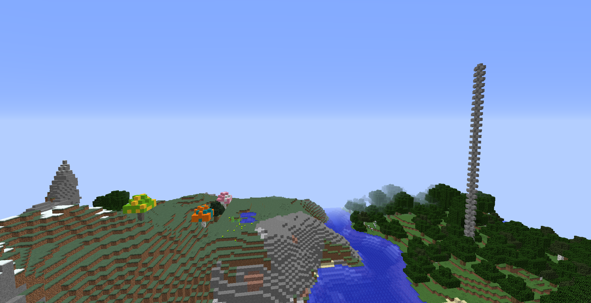
刷怪蛋合成
原版36种刷怪蛋的合成。
| 名称 | 材料 | 合成配方 |
|---|
生成 羊
生成 牛
生成 猪
生成 鸡
生成 兔子
生成 哞菇
生成 蝙蝠
生成 鱿鱼
生成 北极熊 | 任意羊毛+鸡蛋
皮革+鸡蛋
生猪排+鸡蛋
羽毛+鸡蛋
小块皮革+鸡蛋
红色蘑菇+鸡蛋
木炭+鸡蛋
墨囊+鸡蛋
冰+鸡蛋 |
|
|---|
生成 村民
生成 卫道士
生成 唤魔者 | 绿宝石+鸡蛋
铁斧+鸡蛋
闪烁的西瓜+鸡蛋 |
|
|---|
生成 爬行者
生成 僵尸
生成 骷髅
生成 蜘蛛
生成 女巫
生成 末影人
生成 史莱姆
生成 洞穴蜘蛛
生成 蠹虫 | 火药+鸡蛋
腐肉+鸡蛋
骨头+鸡蛋
线+鸡蛋
红石粉+鸡蛋
末影珍珠+鸡蛋
粘液球+鸡蛋
蜘蛛眼+鸡蛋
任意石砖+鸡蛋
|
|
|---|
生成 守卫者
生成 远古守卫者
生成 僵尸猪人
生成 恶魂
生成 岩浆怪
生成 凋灵骷髅
生成 烈焰人
生成 末影螨
生成 潜影贝 | 水桶+鸡蛋
任意生鱼+鸡蛋
金粒+鸡蛋
恶魂之泪+鸡蛋
岩浆膏+鸡蛋
煤炭块+鸡蛋
烈焰粉+鸡蛋
末地石+鸡蛋
紫颂果+鸡蛋 |
|
|---|
生成 狼
生成 豹猫
生成 马
生成 驴
生成 羊驼
生成 鹦鹉
生成 海龟 | 骨头+凋零骷髅头颅+鸡蛋
任意生鱼+凋零骷髅头颅+鸡蛋
皮革+凋零骷髅头颅+鸡蛋
箱子+凋零骷髅头颅+鸡蛋
任意地毯+凋零骷髅头颅+鸡蛋
羽毛+凋零骷髅头颅+鸡蛋
海草+凋零骷髅头颅+鸡蛋 |
|
|---|
楼梯与台阶
修改合成得到的楼梯数量为8；新增18种台阶和17种楼梯回收为原方块。
| 名称 | 材料 | 合成配方 |
|---|
任何木楼梯
圆石楼梯
砖块楼梯
石砖楼梯
地狱砖楼梯
砂岩楼梯
石英楼梯
红砂岩楼梯
紫珀块楼梯
海晶石楼梯
海晶石砖楼梯
暗海晶石楼梯 | 对应的木板
圆石/苔石
砖块
任何石砖
地狱砖块
任何砂岩
任何石英
任何红砂岩
任何紫珀块
海晶石
海晶石砖
暗海晶石 |
8
|
|---|
| 相应方块 | 任意台阶 |
|
|---|
| 相应方块 | 任意楼梯 |
3
|
|---|
合成与分解
修改合成石英块/皮革所需的石英/小块皮革数量为9；新增9个线/冰合成为蜘蛛网/浮冰；新增粘土块、荧石、雪块、西瓜、地狱疣块、蜘蛛网、石英块、皮革的分解。
| 名称 | 材料 | 合成配方 |
|---|
石英块
皮革
蜘蛛网
浮冰 | 石英
小块皮革
线
冰 |
|
|---|
粘土
荧石粉
雪球 | 粘土块
荧石
雪块 |
4
|
|---|
西瓜片
地狱疣
线
石英
小块皮革 | 西瓜
地狱疣块
蜘蛛网
石英块
皮革 |
9
|
|---|
染色床
现在任意颜色的床均可被染色。
锁链盔甲
| 名称 | 材料 | 合成配方 |
|---|
| 锁链头盔 | 铁锭+燧石 |
|
|---|
| 锁链胸甲 | 铁锭+燧石 |
|
|---|
| 锁链护腿 | 铁锭+燧石 |
|
|---|
| 锁链靴子 | 铁锭+燧石 |
|
|---|
平滑方块
新增4种平滑方块的合成。玩家在平滑石头、平滑砂岩、平滑红砂岩、平滑石英块上可以获得速度I、速度II、速度III、速度IV的状态效果。
| 名称 | 材料 | 合成配方 |
|---|
平滑石头
平滑砂岩
平滑红砂岩
平滑石英块 | 石台阶+粘液球
砂岩台阶+粘液球
红砂岩台阶+粘液球
石英台阶+粘液球 |
|
|---|
龙蛋
红沙
粘土
交易
新增了9种村民。
| 职业 | 层级 | 买 | 卖 |
|---|
 | 林业员 | 1 | 36-40 橡木 | 绿宝石 |
|---|
| 36-40 云杉木 | 绿宝石 |
| 36-40 白桦木 | 绿宝石 |
| 36-40 丛林木 | 绿宝石 |
| 36-40 金合欢木 | 绿宝石 |
| 36-40 深色橡木 | 绿宝石 |
| 2 | 2-4 绿宝石 | 橡树树苗 |
|---|
| 2-4 绿宝石 | 云杉树苗 |
| 2-4 绿宝石 | 白桦树苗 |
| 2-4 绿宝石 | 丛林树苗 |
| 2-4 绿宝石 | 金合欢树苗 |
| 2-4 绿宝石 | 深色橡木树苗 |
 | 书画师 | 1 | 24-36 纸 | 绿宝石 |
|---|
| 36-40 玫瑰红 | 绿宝石 |
| 36-40 墨囊 | 绿宝石 |
| 2 | 7-11 绿宝石 | 福字或春字 |
|---|
| 28-44 绿宝石 | 对联[3] |
| 7-11 绿宝石 | TCP logo |
 | 圣诞老人 | - | 皮革靴子+1-64 绿宝石 | 圣诞礼物[1] |
|---|
| 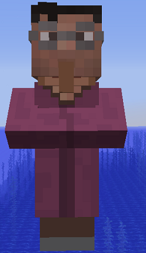 | 药剂师 | 1 | 15-19 地狱疣 | 绿宝石 |
|---|
| 15-19 蜘蛛眼 | 绿宝石 |
| 36-40 烈焰粉 | 绿宝石 |
| 36-40 粘液球 | 绿宝石 |
| 2 | 3-11 绿宝石 | 随机药水 |
|---|
| 3-11 绿宝石 | 随机药水 |
| 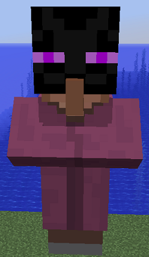 | 末地使 | 1 | 15-19 紫颂果 | 绿宝石 |
|---|
| 15-20 末影珍珠 | 绿宝石 |
| 2 | 36-40 绿宝石 | 潜影箱 |
|---|
| 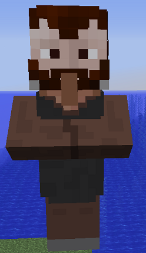 | 烟花师 | 1 | 24-36 纸 | 绿宝石 |
|---|
| 36-40 火药 | 绿宝石 |
| 16-24 青金石 | 绿宝石 |
| 16-24 荧石粉 | 绿宝石 |
| 2 | 1 绿宝石 | 3-5烟花火箭[2] |
|---|
 | 园丁 | 1 | 36-40 骨粉 | 绿宝石 |
|---|
| 2 | 3-5 绿宝石 | 红色郁金香 |
|---|
| 3-5 绿宝石 | 橙色郁金香 |
| 3-5 绿宝石 | 白色郁金香 |
| 3-5 绿宝石 | 粉色郁金香 |
| 3-11 绿宝石 | 向日葵 |
| 3-11 绿宝石 | 丁香 |
| 3-11 绿宝石 | 玫瑰丛 |
| 3-11 绿宝石 | 牡丹 |
 | 机械工 | 1 | 16-24 红石 | 绿宝石 |
|---|
| 36-40 箭 | 绿宝石 |
| 15-20 线 | 绿宝石 |
| 2 | 4-6 绿宝石 | 活塞 |
|---|
| 4-6 绿宝石 | 红石灯 |
| 4-6 绿宝石 | TNT |
| 4-6 绿宝石 | 侦测器 |
| 4-6 绿宝石 | 投掷器 |
| 4-6 绿宝石 | 发射器 |
| 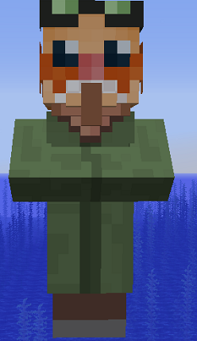 | 潜水员 | 1 | 15-19 海草 | 绿宝石 |
|---|
| 15-19 海带 | 绿宝石 |
| 36-40 海晶砂粒 | 绿宝石 |
| 2 | 鳕鱼+12-20 绿宝石 | 鳕鱼桶 |
|---|
| 三文鱼+12-20 绿宝石 | 三文鱼桶 |
| 小丑鱼+12-20 绿宝石 | 小丑鱼桶 |
| 河鲀+12-20 绿宝石 | 河鲀桶 |
[1] 打开后可随机获得鞘翅、附魔钻石盔甲/工具/剑、铁盔甲/工具/剑、矿物、食物、鞍、马铠、种子。
[2] 为双层球状，颜色随机。
[3] 对联分为四个部分出售，共四种样式。
 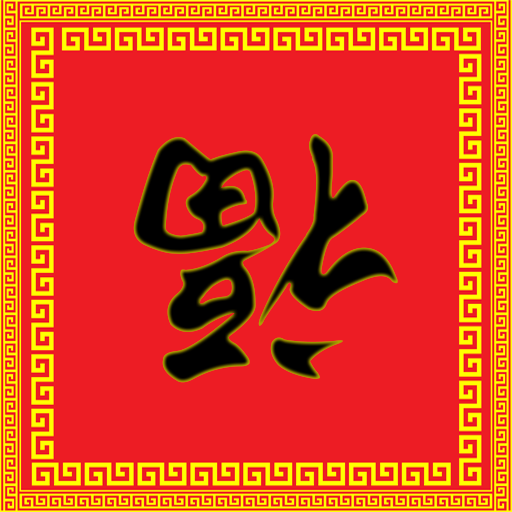
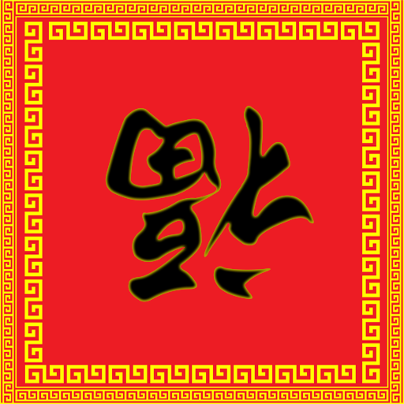

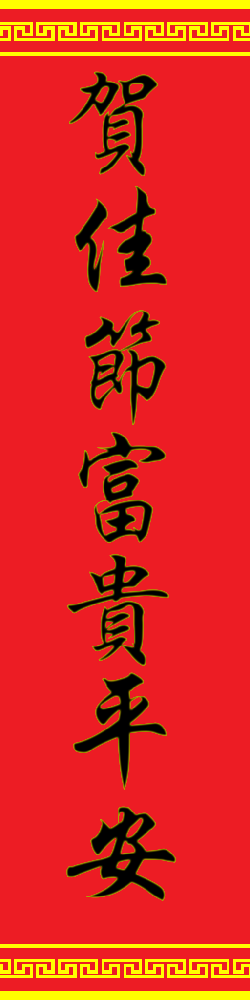 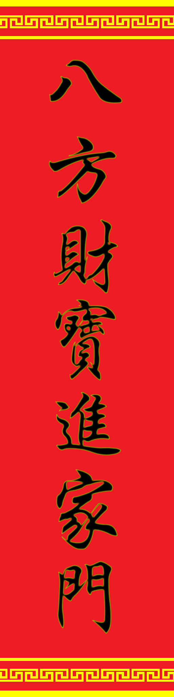
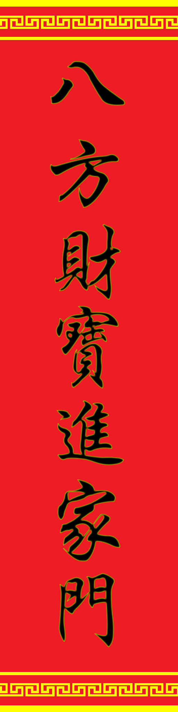 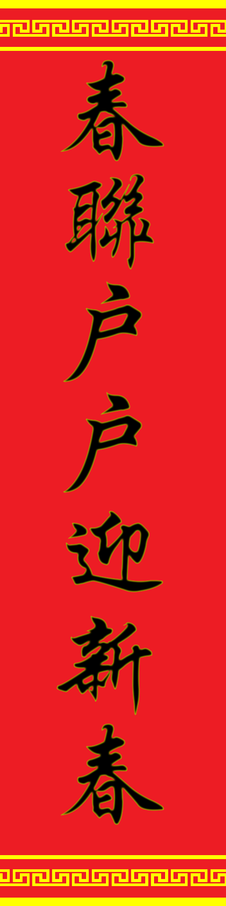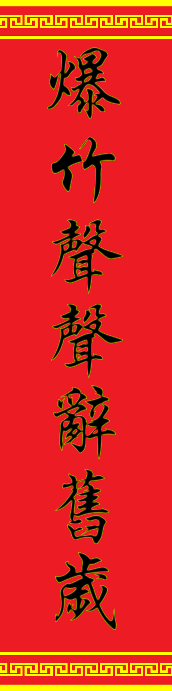
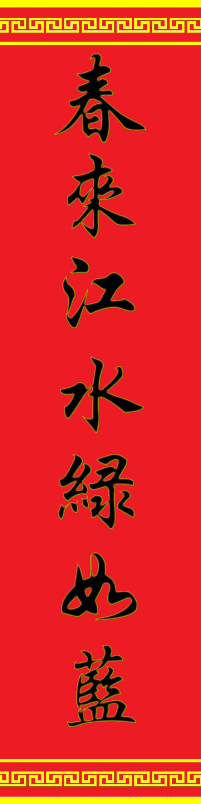
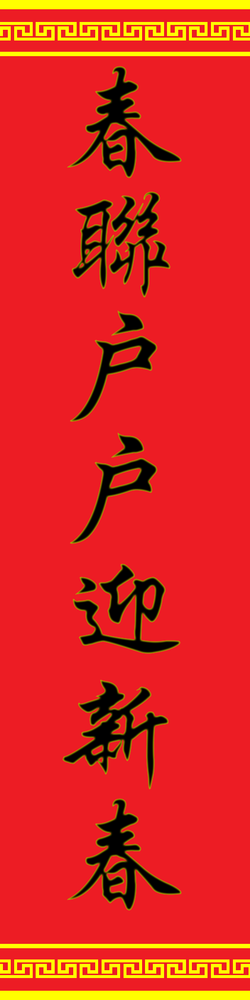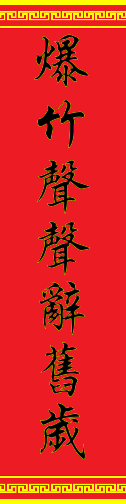
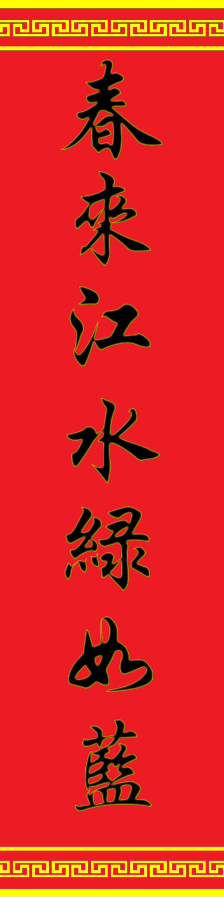
|
空岛
该模块旨在为原版空岛玩家提供从泥土到末地的完整科技链。如果玩家不是处在空岛模式，该模块不会启用。玩家可以通过空无一物的超平坦进入，然后会在海平面高度生成一个5*5*2的平台。
玩家破坏蕴能泥土会获得树苗(各10%)或骨粉(40%)，破坏树叶会掉落树枝(25%)或骨粉(25%)。
沿竖直方向放置熔炉和坩埚，然后向扔入坩埚4个圆石或4个蕴能雪球，可以制作岩浆或水。
在蕴能发射器上方放置泥土/砂砾/圆石/石头/沙子/灵魂沙，然后右击蕴能发射器可以打碎该方块。掉落物如下：
| 方块 | 掉落物 |
|---|
| 泥土 |
橡树树苗 | 云杉树苗 | 白桦树苗 | 丛林树苗 | 金合欢树苗 | 深色橡树树苗 |
小麦种子 | 甜菜种子 | 南瓜种子 | 西瓜种子 | 马铃薯 | 胡萝卜 | 甘蔗 |
|---|
| 10% | 6% | 6% | 6% | 6% | 6% |
12% | 8% | 8% | 8% | 8% | 8% | 8% |
| 圆石 |
沙子 | 砂砾 | 铁碎片 | 金碎片 | | | | | | | | | |
|---|
| 48% | 20% | 20% | 12% | | | | | | | | | |
| 石头 |
砂砾 | 沙子 | 铁碎片 | 金碎片 | | | | | | | | | |
|---|
| 48% | 20% | 20% | 12% | | | | | | | | | |
| 砂砾 |
燧石 | 煤炭碎片 | 铁碎片 | 金碎片 | 石英 | 青金石碎片 | 绿宝石碎片 | 钻石碎片 |
| | | | |
|---|
| 20% | 20% | 20% | 12% | 10% | 6% | 6% | 6% |
| | | | |
| 沙子 |
骨粉 | 红石碎片 | 铁碎片 | 金碎片 | 火药 | 烈焰粉 | 仙人掌 | 可可豆 |
棕色蘑菇 | 红色蘑菇 | | | |
|---|
| 20% | 20% | 20% | 12% | 10% | 6% | 4% | 4% |
2% | 2% | | | |
| 灵魂沙 |
石英 | 地狱疣 | 恶魂之泪 | | | | | |
| | | | |
|---|
| 90% | 9% | 1% | | | | | |
| | | | |
将12个绿宝石块摆成末地传送门框架的形状，然后在正中间放置蕴能雪块即可得到末地传送门。
合成表
| 产物 | 材料 | 合成配方 | 说明 |
|---|
| 蕴能雪球 (Power Snowball) | 木棍+线 |
*
| 背包合成 |
|---|
圆石
泥土 | 泥土+蕴能雪球
圆石+蕴能雪球 |
*
8
| 背包合成 |
|---|
| 蕴能发射器 (Power Dispenser) | 圆石+弓+蕴能雪球 |
*
*
| 背包合成 |
|---|
| 矿石 | 矿石碎片+蕴能雪球 |
*
*
*
*
*
*
*
*
*
| 背包合成 |
|---|
| 鸡蛋 | 蕴能雪球+绿宝石 |
*
*
*
*
*
*
*
*
8
| 背包合成 |
|---|
| 蕴能泥土 (Power Dirt) | 泥土 |
*2
| 背包合成 |
|---|
| 线 | 树枝 |
*
*
*
*
| 背包合成 |
|---|
| 蕴能雪块 (Power Snow Block) | 蕴能雪球 |
*
*
*
*
*
| 背包合成 |
|---|
| 泥土 | 泥土+树苗 |
2
| 原版合成 |
|---|
| 泥土 | 泥土+骨粉 |
2
| 原版合成 |
|---|
| 砂砾 | 石头+沙子 |
2
| 原版合成 |
|---|
| 石制工具 | 燧石+木棍 |
| 原版合成 |
|---|
原版进度奖励
完成以下进度会奖励相应的物品以减少空岛重复的工作量。
| 进度 | 奖励 |
|---|
| Minecraft | 8泥土 |
|---|
| 石器时代 | 8圆石 |
|---|
| 来硬的 | 2漏斗 |
|---|
| 热腾腾的 | 4黑曜石 |
|---|
| 钻石！ | 4黑曜石 |
|---|